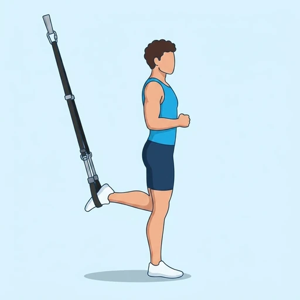

TRX Lunge
A beginner-friendly unilateral lower body exercise using a suspension trainer to target the quadriceps and glutes, while also engaging the hamstrings and gluteus medius for stability.
Upper legs · Suspension Trainer · Beginner


Muscles worked by the TRX Lunge
Primary
Secondary
Also called: glute, glutes, gluteus maximus, buttocks, butt, quad.
Equipment
Also called: trx, trx straps, suspension straps, bodyweight straps, inversion straps.
How to do the TRX Lunge
- Stand facing away from the anchor point, holding the suspension trainer handles in front of you.
- Place one foot into both foot cradles, extending the leg behind you.
- Brace your core and lower your body by bending the front knee, keeping your torso upright.
- Descend until your front thigh is parallel to the floor or just below, maintaining tension on the suspension trainer.
- Drive through your front heel to return to the starting position, extending the front leg.
- Complete all reps on one side, then switch legs and repeat per side.
Form tips
- Keep your front knee tracking over your toes, avoiding inward collapse.
- Maintain a neutral spine throughout the movement, preventing excessive arching or rounding.
- Control the eccentric (lowering) phase to maximize muscle engagement.
- Adjust your distance from the anchor point to modify difficulty.
At a glance
| Body part | Upper legs |
|---|---|
| Category | Strength |
| Force type | Push |
| Mechanic | Compound |
| Difficulty | Beginner |
| Equipment | Suspension Trainer |
| Goals | Hypertrophy, Endurance |
| Tags | Leg day, Calisthenics |
| MET | 6.0 (metabolic equivalent, for calorie estimates) |
| Unilateral | Yes |
| Bodyweight | No |
| Dataset id | trx-lunge |
TRX Lunge in German & Spanish
| German | TRX Ausfallschritt |
|---|---|
| Spanish | Zancada TRX |
Descriptions, instructions and tips ship in all three languages in the JSON.
Related exercises
Exercise data (JSON)
The record below is exactly what exercises.json ships for this exercise — names, descriptions, instructions and tips in English, German and Spanish.
{
"id": "trx-lunge",
"name_en": "TRX Lunge",
"name_de": "TRX Ausfallschritt",
"name_es": "Zancada TRX",
"description_en": "A beginner-friendly unilateral lower body exercise using a suspension trainer to target the quadriceps and glutes, while also engaging the hamstrings and gluteus medius for stability.",
"description_de": "Eine anfängerfreundliche, unilaterale Unterkörperübung mit einem Schlingentrainer, die primär die Quadrizeps und Gesäßmuskulatur anspricht und gleichzeitig die Oberschenkelrückseite und den Gluteus medius für Stabilität aktiviert.",
"description_es": "Un ejercicio unilateral de tren inferior apto para principiantes que utiliza un entrenador de suspensión para trabajar los cuádriceps y glúteos, mientras involucra los isquiotibiales y el glúteo medio para la estabilidad.",
"category": "strength",
"force_type": "push",
"mechanic": "compound",
"difficulty": "beginner",
"equipment": "suspension_trainer",
"body_part": "upper_legs",
"primary_muscles": [
"gluteus_maximus",
"quadriceps"
],
"secondary_muscles": [
"gluteus_medius",
"hamstrings"
],
"goals": [
"hypertrophy",
"endurance"
],
"tags": [
"leg_day",
"calisthenics"
],
"variation_group": "lunge",
"is_unilateral": true,
"is_bodyweight": false,
"instructions_en": [
"Stand facing away from the anchor point, holding the suspension trainer handles in front of you.",
"Place one foot into both foot cradles, extending the leg behind you.",
"Brace your core and lower your body by bending the front knee, keeping your torso upright.",
"Descend until your front thigh is parallel to the floor or just below, maintaining tension on the suspension trainer.",
"Drive through your front heel to return to the starting position, extending the front leg.",
"Complete all reps on one side, then switch legs and repeat per side."
],
"instructions_de": [
"Stelle dich mit dem Rücken zum Ankerpunkt und halte die Griffe des Schlingentrainers vor dir.",
"Lege einen Fuß in beide Fußschlaufen und strecke das Bein nach hinten aus.",
"Spanne deinen Rumpf an und senke deinen Körper, indem du das vordere Knie beugst und deinen Oberkörper aufrecht hältst.",
"Gehe so tief, bis dein vorderer Oberschenkel parallel zum Boden oder leicht darunter ist, und halte dabei Spannung im Schlingentrainer.",
"Drücke dich durch die vordere Ferse zurück in die Ausgangsposition, strecke dabei das vordere Bein.",
"Absolviere alle Wiederholungen auf einer Seite, wechsle dann das Bein und wiederhole pro Seite."
],
"instructions_es": [
"Ponte de espaldas al punto de anclaje, sosteniendo las asas del entrenador de suspensión frente a ti.",
"Coloca un pie en ambos estribos, extendiendo la pierna hacia atrás.",
"Contrae tu abdomen y baja tu cuerpo doblando la rodilla delantera, manteniendo el torso erguido.",
"Desciende hasta que tu muslo delantero esté paralelo al suelo o ligeramente por debajo, manteniendo la tensión en el entrenador de suspensión.",
"Impúlsate a través del talón delantero para volver a la posición inicial, extendiendo la pierna delantera.",
"Completa todas las repeticiones en un lado, luego cambia de pierna y repite por lado."
],
"tips_en": [
"Keep your front knee tracking over your toes, avoiding inward collapse.",
"Maintain a neutral spine throughout the movement, preventing excessive arching or rounding.",
"Control the eccentric (lowering) phase to maximize muscle engagement.",
"Adjust your distance from the anchor point to modify difficulty."
],
"tips_de": [
"Halte dein vorderes Knie über den Zehen und vermeide ein Einknicken nach innen.",
"Bewahre während der gesamten Bewegung eine neutrale Wirbelsäule, um übermäßiges Hohlkreuz oder Rundrücken zu vermeiden.",
"Kontrolliere die exzentrische (senkende) Phase, um die Muskelaktivierung zu maximieren.",
"Passe deinen Abstand zum Ankerpunkt an, um den Schwierigkeitsgrad zu ändern."
],
"tips_es": [
"Mantén tu rodilla delantera alineada con tus dedos del pie, evitando que colapse hacia adentro.",
"Conserva una columna vertebral neutra durante todo el movimiento, previniendo un arqueo o redondeo excesivo.",
"Controla la fase excéntrica (de descenso) para maximizar el compromiso muscular.",
"Ajusta tu distancia del punto de anclaje para modificar la dificultad."
],
"met": 6.0,
"images": {
"flat": {
"start": "images/flat/trx-lunge-start.webp",
"peak": "images/flat/trx-lunge-peak.webp"
}
}
}Fetch just this exercise
const { exercises } = await fetch(
"https://exercise-dataset.com/exercises.json"
).then(r => r.json());
const ex = exercises.find(e => e.id === "trx-lunge");Free for personal and commercial in-app use with attribution (“Exercise data by RepDB”) — see the license and ready-made attribution snippets. Redistributing the data as a dataset or API is not permitted.